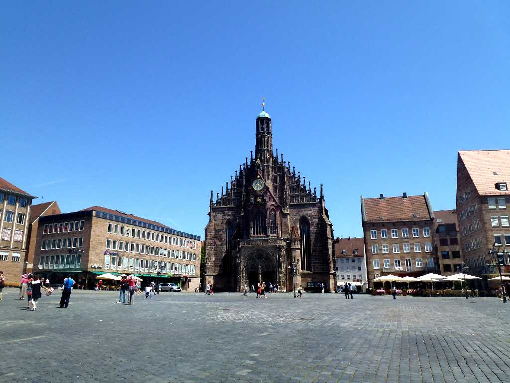
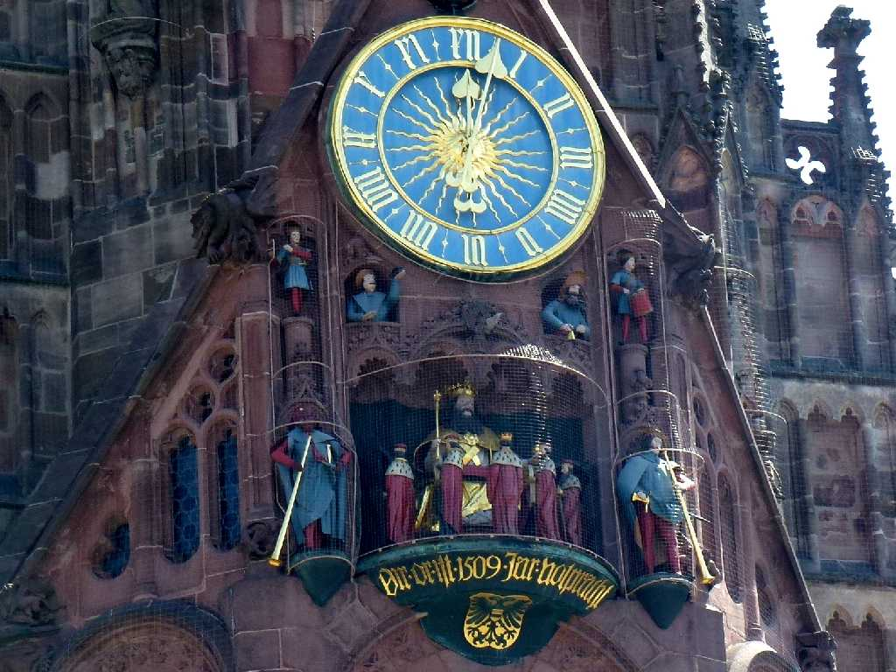
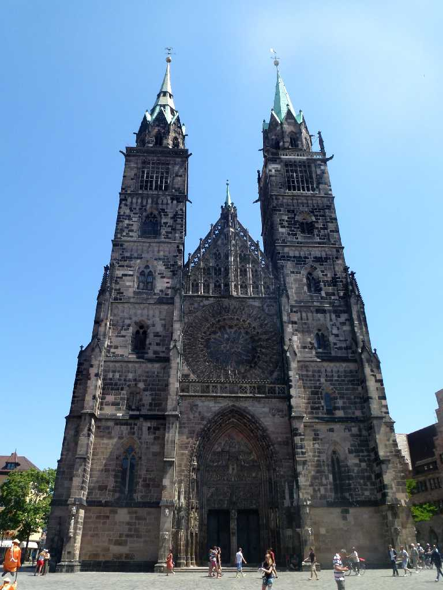
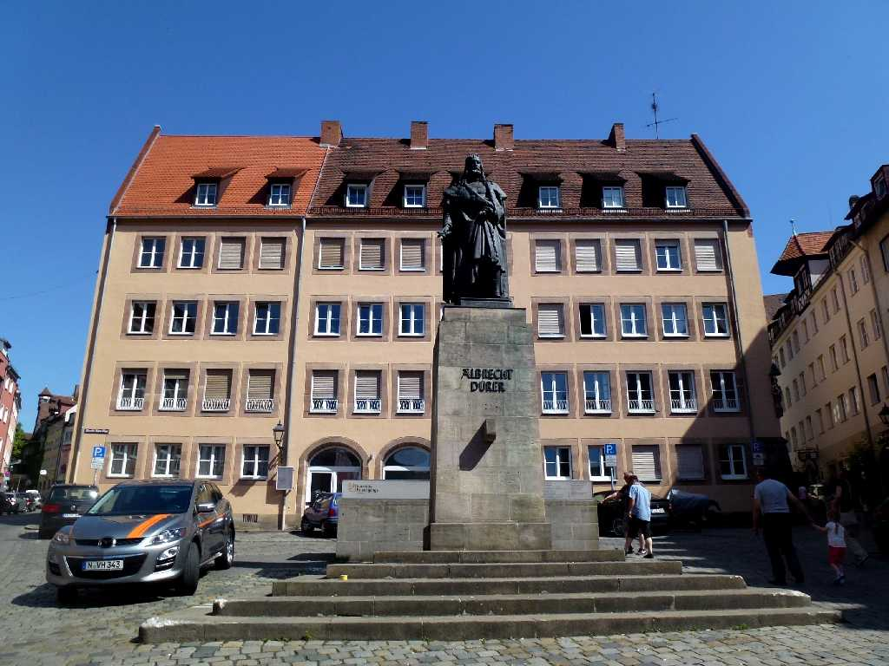
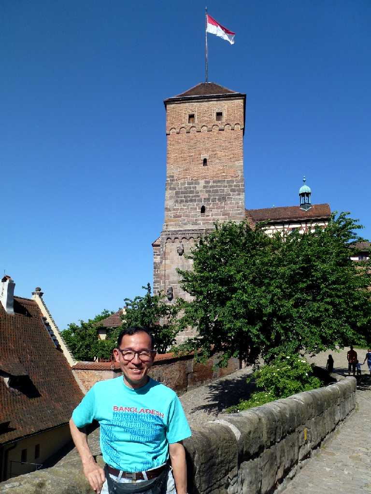

Frauenkirche Hauptmarkt Nürnberg
１４世紀に創られたホール様式の聖母教会

Frauenkirche


毎日１２時に７人の選帝侯が出てくる仕掛け時計

Lorenzkirche
１２７０年に着手したゴシック様式の聖ロレンツォ教会は１５２５年に宗教改革の影響をうけプロテスタントの教会となった

Dürer
１４７１年ニュールンベルクで生まれたドイツルネサンス期の画家デュラー像

July 9 2014 Kaiserburg
１２世紀に築かれ神聖ローマ帝国の居城としてカールⅣ世が多く利用した